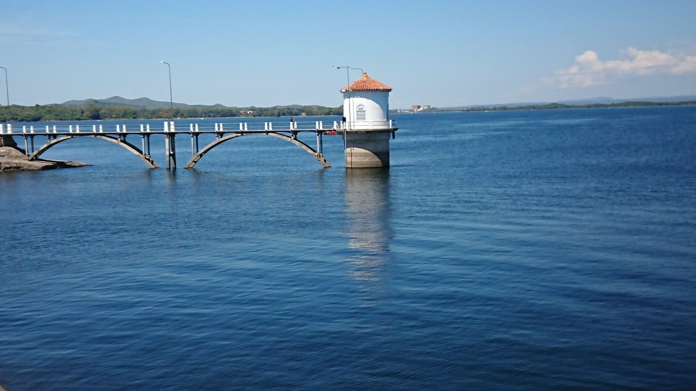

Lugares de Interes
El entorno invita a realizar actividades al aire libre que proporcionan bienestar y salud, rincones para vivir con adrenalina y actividades de turismo aventura, caminatas y cabalgatas guiadas reconociendo la flora y la fauna de las sierras de córdoba. Alquiler de bicicletas, cuadriciclos o motos, prácticas de buceo, pesca, tirolesa, rappel, escalada, travesías en vehículos 4x4 son algunas de las opciones.
La Cumbrecita & Villa General Belgrano
Quienes decidan recorrer el Circuito de Calamuchita, en la Provincia de Córdoba, dos localidades resultarán imperdibles: La Cumbrecita y Villa General Belgrano se brindan con todos sus encantos para que el visitante las disfrute de la manera que prefiera.

Museo de Arte Religioso Capilla Vieja, La calera
La Capilla Vieja fue construida en el año 1727 por la Compañía de Jesús. Ubicada dentro del predio de la estancia La Calera (propiedad de los jesuitas) contribuyó a la explotación de las riquezas naturales de cal que se necesitaba para la edificación de las obras de la ciudad.

Embalse Río Tercero
El gran Lago que conforma el majestuoso Embalse Río Tercero es uno de los más grandes de la Provincia de Córdoba. Sus 5.600 hectáreas de superficie reciben las aguas de los ríos Santa Rosa, Grande, Amboy, Quilinzo y La Cruz, todos vienen deslizándose desde las Sierras Grandes. Se sabe que su piedra fundacional se colocó en 1911 y que surgió gracias a un proyecto de una empresa inglesa. Esta construcción se terminó de realizar entre 1928 y 1936 por los ingenieros Alba Posse y Fiz Simón.
